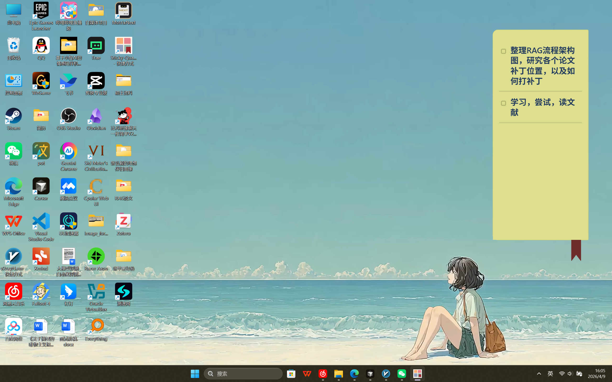
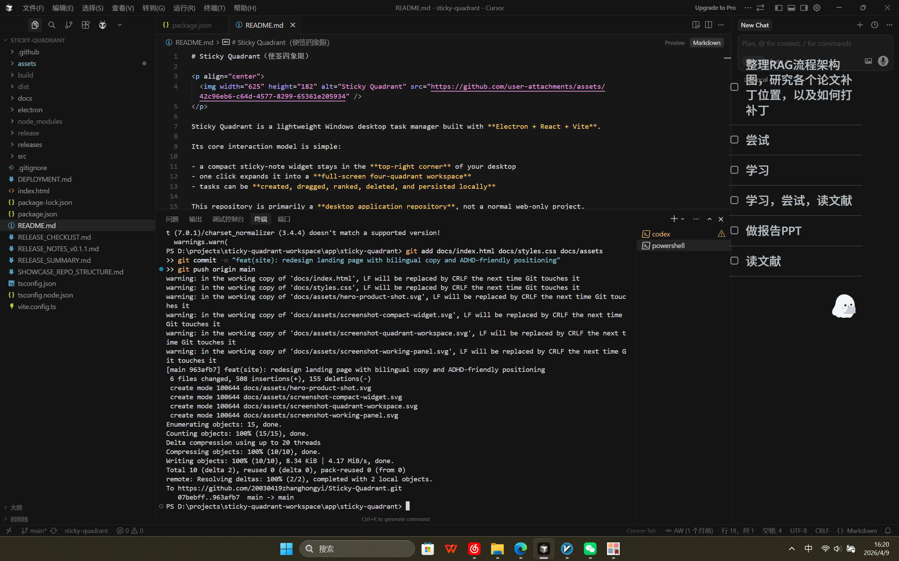
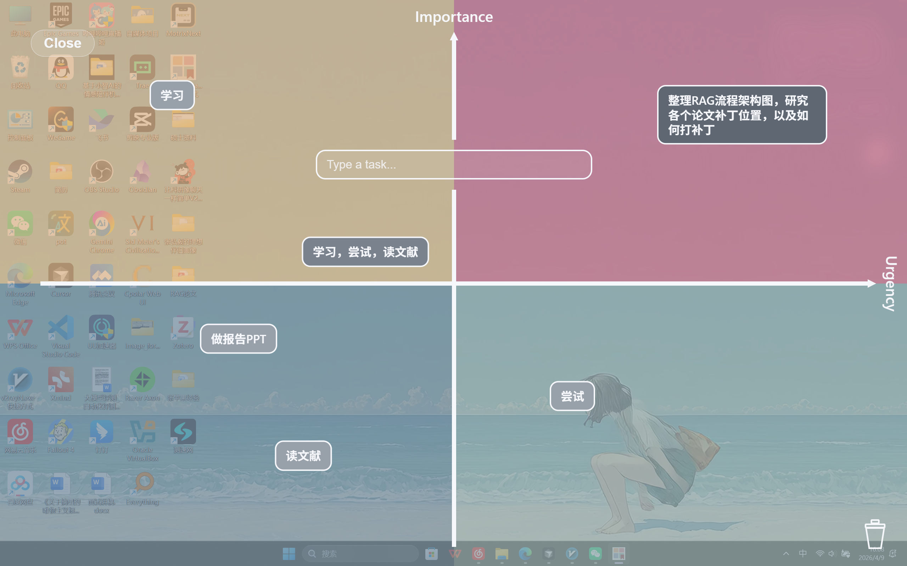
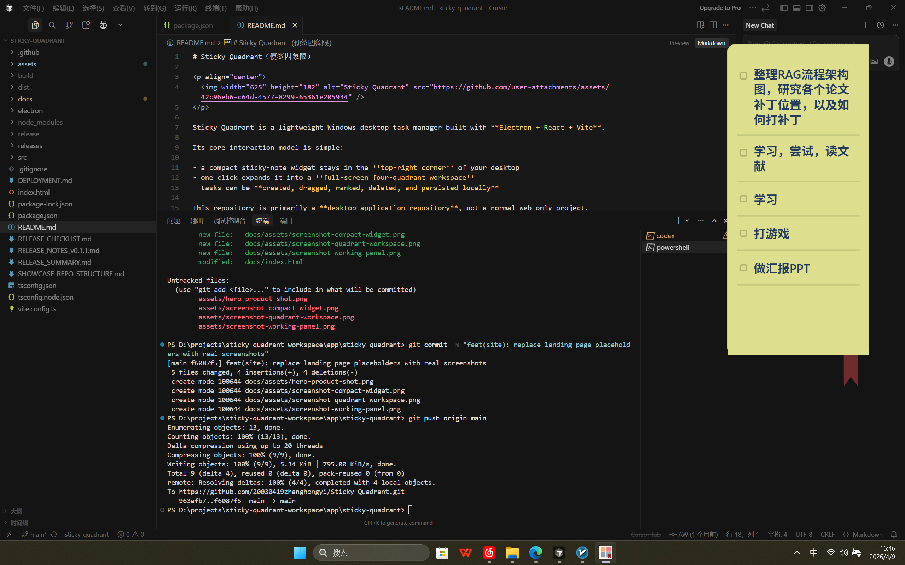
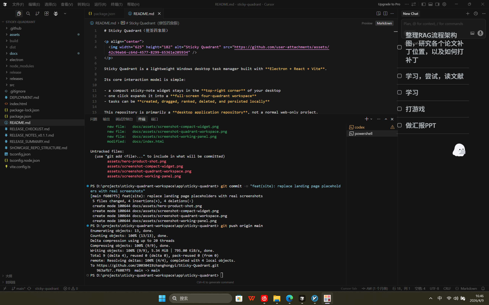
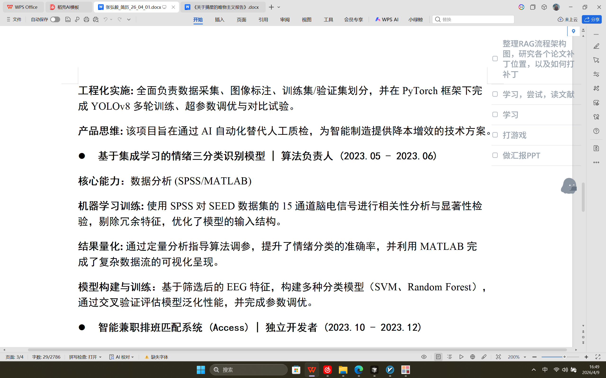

01 · Capture
右上角便签挂件
Compact sticky widget
先从桌面右上角的小入口开始，让任务保持可见，但不过度抢走当前注意力。
Start with a small top-right desktop entry point that keeps tasks visible without overwhelming the moment.
Windows Desktop App
桌面优先 · 注意力友好 · 轻量任务整理 / Desktop-first, attention-friendly, lightweight task management
A calmer task workflow for distractible minds
从右上角便签开始，一键进入四象限工作区，把想做的事变成现在该做的事。
Start from a compact sticky widget, expand into a full-screen quadrant workspace, and turn vague tasks into visible priorities.

Desktop States
Sticky Quadrant 不是几个彼此分离的小组件，而是一个从捕捉、保持可见，到视觉排序的完整桌面工作流。
Sticky Quadrant is not a set of disconnected widgets. It is one desktop workflow that moves from capture, to visibility, to clearer prioritization.
01 · Capture
先从桌面右上角的小入口开始，让任务保持可见，但不过度抢走当前注意力。
Start with a small top-right desktop entry point that keeps tasks visible without overwhelming the moment.
02 · Keep visible
在桌面上下文里展开工作，不需要切进另一个复杂系统，也不必立刻面对一整页任务。
Expand into a working state inside the desktop flow, without jumping into a separate heavy planning system.

03 · Sort clearly
当需要判断轻重缓急时，再进入全屏象限，把任务从“堆着”变成“看得清”。
When priorities need clarity, move into the full-screen quadrant workspace and sort visually across the desktop.

Attention-Friendly Fit
它先给你一个更轻的开始方式，而不是一上来就让你面对整页密集待办。
It gives you a lighter starting point instead of a full page of dense tasks.
当“先做什么”不清楚时，用象限和位置来判断，通常比纯文字列表更容易进入状态。
When priorities are vague, visual placement can be easier to act on than a text-heavy list.
从便签到展开面板，再到工作区，整个流程都留在同一个桌面系统里。
The flow stays inside one desktop system, so context switching is reduced.
对于容易被长列表压住的人，拖拽、空间感和可视化优先级往往更直接。
For people who get stuck in long lists, drag, space, and visual priority can feel more direct.
Modes
同一个桌面工具，可以根据你当下需要的存在感，保持清晰、变得更轻，或者更安静地停留在桌面上。
The same desktop tool can stay clear, gentler, or quieter depending on how much visual presence you want.

最清晰、最直接，适合主动整理任务、查看列表和准备进入工作区。
The clearest and most direct state for reviewing tasks and actively organizing what comes next.

视觉存在感更轻，适合想让任务留在视野里，但希望它更柔和一些的时候。
A softer visual presence when you want task context nearby but less interruptive.

更安静、更克制，适合想降低干扰，同时保留一种低存在感的桌面提醒。
A quieter and subtler state for lower distraction with a minimal always-on reminder.
Try It
如果长待办清单容易让你卡住，Sticky Quadrant 提供一种更轻、更安静、更可视化的桌面任务流。
If long task lists feel heavy, Sticky Quadrant offers a lighter, calmer, and more visual desktop workflow.